1주차 필독 자료 정리 · 영문 / 한국어 (English / Korean)
Sources: [Wojcik06] ADD v2.0 · [Bass21] Software Architecture in Practice, 4th ed. · [Nygard18] Release It! (Circuit Breaker) · [Ivers25] Will Generative AI Fill the Automation Gap?
The inputs to ADD are functional requirements, design constraints, and quality attribute requirements that the system's stakeholders have prioritized according to business and mission goals. The section defines each of these three input categories, notes that inputs may be implied rather than explicit and can be hard to categorize, and concludes that collecting the inputs matters more than classifying them precisely.
ADD의 입력물은 기능 요구사항, 설계 제약사항, 그리고 품질 속성 요구사항이며, 이들은 시스템 이해관계자가 비즈니스 및 임무 목표에 따라 우선순위를 매긴 것이다. 이 절은 세 가지 입력 범주를 각각 정의하고, 입력물이 명시적이지 않고 암묵적일 수 있으며 분류가 어려울 수 있음을 지적한 뒤, 정확한 분류보다 입력물을 수집하는 것이 더 중요하다고 결론짓는다.
Functional requirements specify what functions a system must provide to meet stated and implied stakeholder needs when the software is used under specific conditions [ISO 01]. Examples include allowing users to buy and sell securities, reviewing account activity, monitoring meteorological sensor inputs, notifying operators of reactor core temperature changes, and computing and displaying satellite orbits and trajectories.
기능 요구사항은 소프트웨어가 특정 조건에서 사용될 때, 명시적·암묵적 이해관계자 요구를 충족하기 위해 시스템이 제공해야 하는 기능이 무엇인지를 규정한다[ISO 01]. 예로는 사용자의 증권 매매 허용, 계좌 활동 조회, 기상 센서 입력 모니터링 및 기록, 원자로 노심 온도 변화에 대한 운영자 통지, 모든 위성의 궤도와 궤적 계산 및 표시 등이 있다.
Design constraints are decisions about a system's design that must be incorporated into any final design; they represent a design decision with a predetermined outcome. Examples include mandating Oracle 8.0 for persistent storage, requiring Web accessibility of services, implementing in Visual Basic, interacting with other systems only via Publish/Subscribe, running on both Windows and Unix, and integrating with legacy applications.
설계 제약사항은 시스템의 어떤 최종 설계에도 반드시 반영되어야 하는 설계상의 결정으로, 결과가 미리 정해진 설계 결정을 의미한다. 예로는 영구 저장소로 Oracle 8.0 사용 강제, 서비스의 웹 접근성 요구, Visual Basic으로 구현, 다른 시스템과는 Publish/Subscribe로만 상호작용, Windows와 Unix 모두에서 실행, 레거시 애플리케이션과의 통합 등이 있다.
Quality attribute requirements indicate the degrees to which a system must exhibit various properties. Examples cited include buildability (buildable within six months), availability (recover from a processor crash within one second), portability (port the UI within six months), performance (process sensor input within one second), security (deny unauthorized access 100% of the time), testability (unit tests within three hours at 85% path coverage), usability (cancel an operation within one second), and capacity (maximum 50% CPU utilization).
품질 속성 요구사항은 시스템이 여러 속성을 어느 정도로 발휘해야 하는지를 나타낸다. 제시된 예로는 구축성(6개월 내 구축 가능), 가용성(프로세서 충돌로부터 1초 내 복구), 이식성(UI를 6개월 내 새 플랫폼으로 이식), 성능(센서 입력을 1초 내 처리), 보안(무단 접근을 100% 차단), 시험성(85% 경로 커버리지로 3시간 내 단위 테스트 수행), 사용성(1초 내 작업 취소), 용량(최대 50% CPU 사용률) 등이 있다.
Functional requirements, design constraints, and quality attribute requirements may be implied rather than explicit. For example, SEC review of all transactions implies the system must keep a permanent transaction log and support report generation; Joe being the only available resource with only Oracle experience implies Oracle must be used for persistent storage; and dramatically increasing market demand within eight months implies the system must be buildable within six months.
기능 요구사항, 설계 제약사항, 품질 속성 요구사항은 명시적이지 않고 암묵적일 수 있다. 예를 들어 모든 거래가 증권거래위원회(SEC)의 검토 대상이라는 조건은 시스템이 영구 거래 로그를 유지하고 그 거래에 기반한 보고서 생성을 지원해야 함을 함의하며, 영구 저장소 담당 가능한 유일한 인력 Joe가 Oracle 경험만 있다는 조건은 영구 저장소에 Oracle을 사용해야 함을 함의하고, 8개월 내 시장 수요 급증은 시스템이 6개월 내 구축 가능해야 함을 함의한다.
In some cases it may be difficult to categorize a condition as a functional requirement, design constraint, or quality attribute requirement. For example, a security requirement for user authentication could be read as either a functional or a quality attribute requirement, and a requirement to interoperate with a particular legacy application could be read as either a functional requirement or a design constraint.
어떤 경우에는 특정 조건을 기능 요구사항, 설계 제약사항, 품질 속성 요구사항 중 무엇으로 분류할지 정하기 어려울 수 있다. 예를 들어 사용자 인증에 대한 보안 요구사항은 기능 요구사항으로도 품질 속성 요구사항으로도 해석될 수 있고, 특정 레거시 애플리케이션과의 상호운용 요구사항은 기능 요구사항으로도 설계 제약사항으로도 해석될 수 있다.
Distinguishing among the three kinds of inputs is not as important as making sure you collect these inputs before beginning ADD. Throughout the rest of the document the three input types are referred to collectively as "the requirements," and the document assumes it is addressing the system architect throughout the steps of the ADD method.
세 가지 입력물을 서로 구분하는 것은 ADD를 시작하기 전에 이 입력물들을 반드시 수집하는 것만큼 중요하지 않다. 문서의 나머지 부분에서는 이 세 가지 입력 유형을 통틀어 "요구사항(the requirements)"이라 부르며, ADD 방법의 단계 전반에 걸쳐 시스템 아키텍트를 대상으로 한다고 가정한다.
Quality attributes (QAs) do not stand on their own; they pertain to the functions of the system. A functional requirement such as "when the user presses the green button, the Options dialog appears" can be annotated with a performance QA (how quickly), an availability QA (how often it may fail and how fast it is repaired), or a usability QA (how easy it is to learn).
품질 속성(QA)은 그 자체로 존재하지 않으며 시스템의 기능과 결부된다. "사용자가 녹색 버튼을 누르면 옵션 대화상자가 나타난다" 같은 기능 요구사항에는 성능 QA(얼마나 빨리), 가용성 QA(얼마나 자주 실패해도 되고 얼마나 빨리 복구되는지), 사용성 QA(얼마나 배우기 쉬운지) 주석을 붙일 수 있다.
(1) Definitions are often not testable — saying a system is simply "modifiable" is meaningless, since every system is modifiable with respect to some changes and not others. (2) Discussion focuses on which quality an issue "belongs" to (e.g., is a denial-of-service attack availability, performance, security, or usability?), a categorization debate that does not help architects build solutions. (3) Each attribute community has its own vocabulary — performance has "events," security has "attacks," availability has "faults," usability has "user input" — though these may describe the same occurrence.
(1) 정의가 시험 가능(testable)하지 않은 경우가 많다 — 시스템이 단지 "변경 가능하다"고 말하는 것은 무의미한데, 모든 시스템은 어떤 변경에 대해서는 변경 가능하고 다른 변경에 대해서는 그렇지 않기 때문이다. (2) 논의가 어떤 이슈가 어느 품질에 "속하는가"에 집중된다(예: 서비스 거부 공격은 가용성·성능·보안·사용성 중 무엇인가?). 이런 분류 논쟁은 아키텍트가 해결책을 만드는 데 도움이 되지 않는다. (3) 각 속성 커뮤니티가 고유 용어를 쓴다 — 성능은 "이벤트", 보안은 "공격", 가용성은 "결함", 사용성은 "사용자 입력"이라 부르지만 같은 사건을 가리킬 수 있다.
The first two problems are solved by using quality attribute scenarios (§3.3) as a common, testable form; the third is solved by presenting each community's concepts in a common form (Chapters 4–14). The book focuses on two categories: attributes describing a runtime property of the system (e.g., availability, performance, usability), and attributes describing a property of the system's development (e.g., modifiability, testability, deployability). QAs can never be achieved in isolation — achieving one affects others, often negatively (e.g., portability isolates dependencies, adding overhead that hurts performance), so design is partly about making appropriate tradeoffs.
앞의 두 문제는 품질 속성 시나리오(§3.3)를 공통의 시험 가능한 형식으로 사용하여 해결하고, 세 번째 문제는 각 커뮤니티의 개념을 공통 형식으로 제시(4~14장)하여 해결한다. 이 책은 두 범주에 집중한다: 시스템의 런타임 속성을 기술하는 속성(예: 가용성·성능·사용성)과 시스템의 개발 속성을 기술하는 속성(예: 변경용이성·시험성·배포성)이다. QA는 결코 고립적으로 달성될 수 없으며, 하나를 달성하면 다른 것에 영향을 준다(흔히 부정적으로 — 예: 이식성은 의존성을 격리해 오버헤드를 더해 성능을 해친다). 따라서 설계는 부분적으로 적절한 트레이드오프를 만드는 일이다.
All QA requirements are specified in a common form — the quality attribute scenario — which is testable, unambiguous, and insensitive to categorization. A scenario has six parts.
모든 QA 요구사항은 공통 형식인 품질 속성 시나리오로 명세하며, 이는 시험 가능하고 모호하지 않으며 분류에 좌우되지 않는다. 시나리오는 여섯 부분으로 구성된다.
Stimulus — an event arriving at the system or project (an event, user operation, attack, modification request, etc.). Stimulus source — the entity (human, system, actor) that generated the stimulus; its source may affect how it is treated (a trusted vs. untrusted user). Response — the activity undertaken as a result of the stimulus (process the event, implement and test a modification, etc.). Response measure — a measurable outcome so the scenario can be tested (latency, throughput, labor/time to make a change). Environment — the set of circumstances (normal/overload operation, startup, development, testing); the fifth failure may be handled differently than the first. Artifact — the target the stimulus arrives at (the whole system or specific pieces; a data-store failure may differ from a metadata-store failure). General scenarios are system-independent templates; concrete scenarios are specific to the system under consideration.
자극(Stimulus) — 시스템이나 프로젝트에 도착하는 사건(이벤트, 사용자 조작, 공격, 변경 요청 등). 자극원(Stimulus source) — 자극을 생성한 개체(사람·시스템·행위자)로, 출처에 따라 처리가 달라질 수 있다(신뢰/비신뢰 사용자). 응답(Response) — 자극의 결과로 수행되는 활동(이벤트 처리, 변경 구현·테스트 등). 응답 측정(Response measure) — 시나리오를 시험할 수 있도록 측정 가능한 결과(지연, 처리량, 변경에 드는 노력·시간). 환경(Environment) — 시나리오가 일어나는 상황(정상/과부하 운영, 시작, 개발, 테스트 등). 다섯 번째 장애는 첫 번째 장애와 다르게 처리될 수 있다. 산출물/대상(Artifact) — 자극이 도착하는 대상(전체 시스템 또는 특정 부분; 데이터 저장소 장애는 메타데이터 저장소 장애와 다를 수 있다). 일반 시나리오는 시스템 독립적 템플릿이고, 구체 시나리오는 대상 시스템에 특화된 것이다.
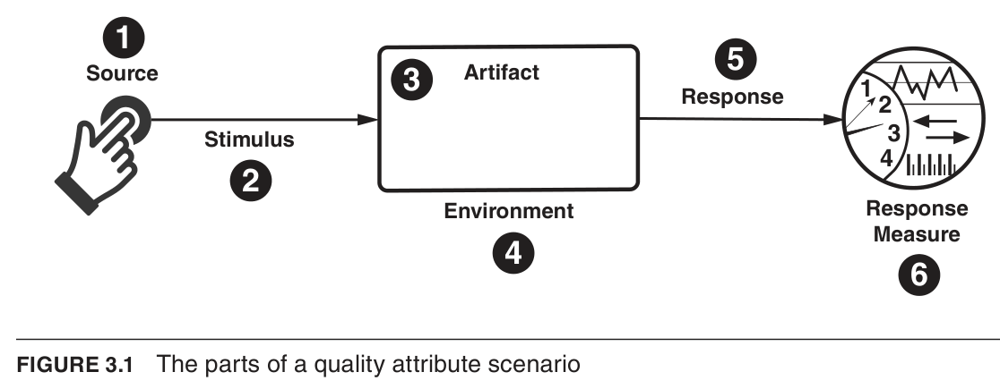
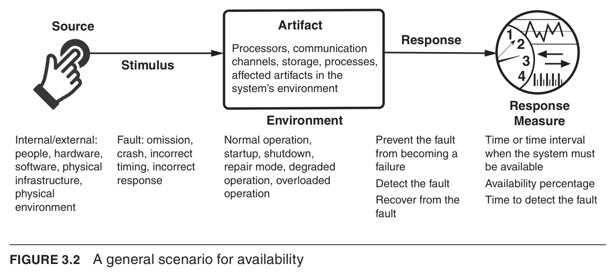
Refactoring may be done for many reasons: to improve security (placing modules into different subsystems by their security properties), to improve performance (removing bottlenecks, rewriting slow code), or to improve modifiability. For example, when two modules are repeatedly affected by the same changes because they are partial duplicates, the common functionality can be factored out into its own module — improving cohesion and reducing the number of places that must change when the next similar change request arrives.
리팩터링은 여러 이유로 수행된다: 보안 향상(보안 속성에 따라 모듈을 서로 다른 하위 시스템에 배치), 성능 향상(병목 제거, 느린 코드 재작성), 또는 변경용이성 향상. 예를 들어 두 모듈이 (부분적) 중복이기 때문에 같은 종류의 변경에 반복적으로 영향을 받는다면, 공통 기능을 별도의 모듈로 추출할 수 있다. 이는 응집도를 높이고, 다음 유사한 변경 요청이 올 때 변경해야 할 위치의 수를 줄인다.
Code refactoring is a mainstay practice of agile development projects, used as a cleanup step to ensure that teams have not produced duplicative or overly complex code. However, the concept applies to architectural elements as well, not just to code.
코드 리팩터링은 애자일 개발 프로젝트의 핵심 실무로, 팀이 중복되거나 지나치게 복잡한 코드를 만들지 않았는지 확인하는 정리 단계로 사용된다. 그러나 이 개념은 코드뿐 아니라 아키텍처 요소에도 적용된다.
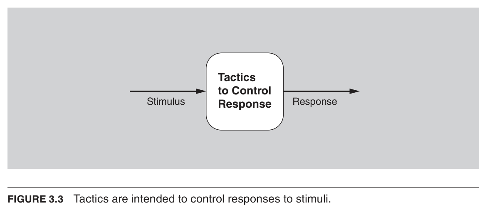
[Bass21] Ch.3 "Understanding Quality Attributes"
A failure occurs when the system no longer delivers a service consistent with its specification and that failure is observable by the system's actors; a fault, or combination of faults, has the potential to cause such a failure. Availability tactics are designed to enable a system to prevent or endure faults so that the delivered service remains compliant with its specification, keeping faults from becoming failures or at least bounding their effects and making repair possible. These tactics have one of three purposes: fault detection, fault recovery, or fault prevention. Because such tactics are often supplied by software infrastructure like middleware, the architect's job may be choosing and assessing the right combination of tactics rather than implementing them.
시스템이 명세에 부합하는 서비스를 더 이상 제공하지 못하고 그 사실을 시스템의 행위자(actor)가 관측할 수 있을 때 장애(failure)가 발생하며, 결함(fault) 또는 결함들의 조합이 그러한 장애를 일으킬 수 있다. 가용성 전술은 시스템이 결함을 예방하거나 견뎌내어 제공 서비스가 명세를 계속 준수하도록 하며, 결함이 장애로 번지지 않게 하거나 적어도 그 영향을 제한하고 복구를 가능하게 한다. 이 전술들은 결함 탐지, 결함 복구, 결함 예방이라는 세 가지 목적 중 하나를 가진다. 이러한 전술은 미들웨어 같은 소프트웨어 인프라가 제공하는 경우가 많아, 아키텍트의 역할은 직접 구현하기보다 올바른 전술 조합을 선택하고 평가하는 것일 수 있다.
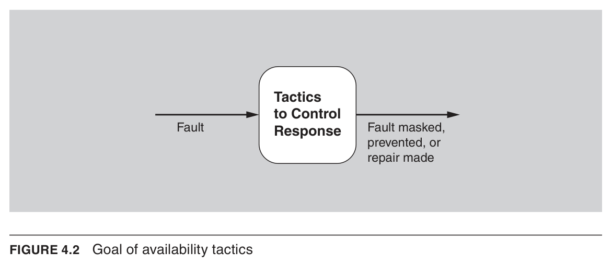
A monitor is a component used to monitor the state of health of various other parts of the system, such as processors, processes, I/O, memory, and so forth. A system monitor can detect failure or congestion in the network or other shared resources, such as from a denial-of-service attack. It orchestrates software using other detection tactics to find malfunctioning components; for example, it can initiate self-tests, or detect faulty timestamps or missed heartbeats.
모니터는 프로세서, 프로세스, I/O, 메모리 등 시스템의 다른 여러 부분의 건강 상태를 감시하는 데 사용되는 구성 요소다. 시스템 모니터는 서비스 거부(DoS) 공격 등으로 인한 네트워크나 기타 공유 자원의 장애 또는 혼잡을 탐지할 수 있다. 또한 이 범주의 다른 탐지 전술을 활용해 오작동 구성 요소를 찾아내도록 조율하는데, 예를 들어 자가 진단(self-test)을 개시하거나 잘못된 타임스탬프 또는 누락된 하트비트를 탐지하는 구성 요소가 될 수 있다.
In this tactic, an asynchronous request/response message pair is exchanged between nodes; it is used to determine reachability and the round-trip delay through the associated network path, and the echo indicates that the pinged component is alive. The ping is often sent by a system monitor. Ping/echo requires a time threshold to be set, which tells the pinging component how long to wait for the echo before considering the pinged component to have "timed out." Standard implementations are available for nodes interconnected via Internet Protocol (IP).
이 전술에서는 노드 사이에 비동기 요청/응답 메시지 쌍이 교환되며, 이를 통해 도달 가능성과 해당 네트워크 경로의 왕복 지연 시간을 판단하고, 에코는 핑을 받은 구성 요소가 살아 있음을 나타낸다. 핑은 보통 시스템 모니터가 보낸다. 핑/에코는 시간 임계값 설정을 필요로 하는데, 이 값은 핑을 보낸 구성 요소가 상대를 "타임아웃"으로 간주하기 전 에코를 얼마나 기다릴지를 알려준다. IP로 상호 연결된 노드를 위한 표준 구현이 제공된다.
This fault detection mechanism employs a periodic message exchange between a system monitor and a process being monitored. A special case of heartbeat is when the monitored process periodically resets the watchdog timer in its monitor to prevent it from expiring and thus signaling a fault. For systems where scalability is a concern, overhead can be reduced by piggybacking heartbeat messages onto other control messages being exchanged. The difference between heartbeat and ping/echo lies in who holds the responsibility for initiating the health check—the monitor or the component itself.
이 결함 탐지 메커니즘은 시스템 모니터와 감시 대상 프로세스 사이의 주기적 메시지 교환을 사용한다. 하트비트의 특수한 경우는 감시 대상 프로세스가 모니터의 워치독 타이머를 주기적으로 재설정하여 타이머 만료(즉 결함 신호 발생)를 막는 것이다. 확장성이 중요한 시스템에서는 하트비트 메시지를 교환 중인 다른 제어 메시지에 실어 보내(piggyback) 오버헤드를 줄일 수 있다. 하트비트와 핑/에코의 차이는 건강 점검을 누가 개시하느냐(모니터인지 구성 요소 자신인지)에 있다.
Timeout is a form of exception detection that raises an exception when a component detects that it or another component has failed to meet its timing constraints. For example, a component awaiting a response from another component can raise an exception if the wait time exceeds a certain value. It thus signals a condition that alters the normal flow of execution so the fault can be handled.
타임아웃은 예외 탐지(exception detection)의 한 형태로, 어떤 구성 요소가 자신 또는 다른 구성 요소가 타이밍 제약을 충족하지 못했음을 감지했을 때 예외를 발생시킨다. 예를 들어 다른 구성 요소의 응답을 기다리는 구성 요소는 대기 시간이 특정 값을 초과하면 예외를 발생시킬 수 있다. 이렇게 정상 실행 흐름을 바꾸는 상태를 알림으로써 결함을 처리할 수 있게 한다.
The retry tactic assumes that the fault that caused a failure is transient, and that retrying the operation may lead to success. It is used in networks and in server farms where failures are expected and common. A limit should be placed on the number of retries that are attempted before a permanent failure is declared.
재시도 전술은 장애를 일으킨 결함이 일시적(transient)이며 작업을 다시 시도하면 성공할 수 있다고 가정한다. 이 전술은 장애가 예상되고 흔하게 발생하는 네트워크와 서버 팜에서 사용된다. 영구적 장애로 선언하기 전까지 시도하는 재시도 횟수에는 한도를 두어야 한다.
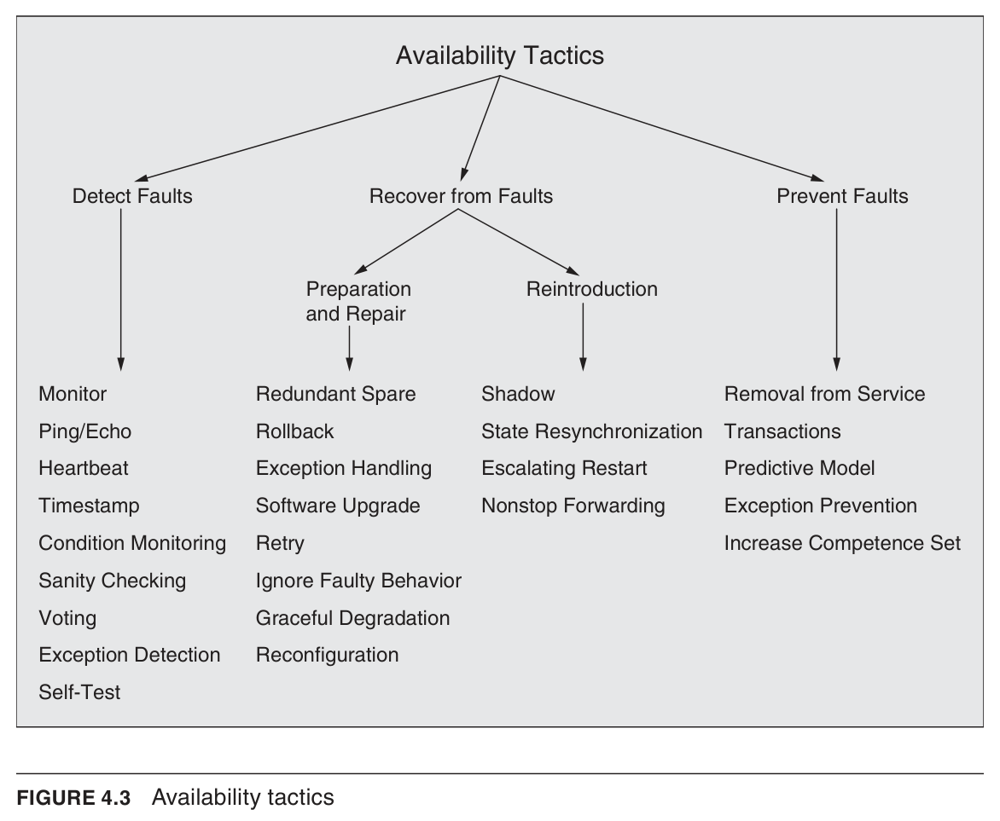
For stateful components, this refers to a configuration in which all of the nodes—active or redundant spare—in a protection group receive and process identical inputs in parallel, allowing the redundant spares to maintain a synchronous state with the active nodes. Because the redundant spare possesses an identical state to the active processor, it can take over from a failed component in a matter of milliseconds. The simple case of one active node and one redundant spare is commonly called one-plus-one redundancy. Active redundancy can also be used for facilities protection, where active and standby network links ensure highly available connectivity.
상태를 가지는(stateful) 구성 요소의 경우, 이는 보호 그룹 내의 모든 노드(활성 노드든 중복 스페어든)가 동일한 입력을 병렬로 받아 처리하여 중복 스페어가 활성 노드와 동기화된 상태를 유지하는 구성을 가리킨다. 중복 스페어가 활성 프로세서와 동일한 상태를 보유하므로, 장애가 난 구성 요소를 수 밀리초 내에 인계받을 수 있다. 활성 노드 하나와 중복 스페어 하나로 이루어진 단순한 경우를 흔히 1+1 중복(one-plus-one redundancy)이라 부른다. 능동 중복은 활성·대기 네트워크 링크로 고가용 연결성을 보장하는 설비 보호(facilities protection)에도 사용될 수 있다.
For stateful components, this refers to a configuration in which only the active members of the protection group process input traffic, and one of their duties is to provide the redundant spares with periodic state updates. Because the state maintained by the spares is only loosely coupled with that of the active nodes—the looseness being a function of the update period—the redundant nodes are called warm spares. Passive redundancy achieves a balance between the more highly available but more compute-intensive and expensive active redundancy pattern and the less available but significantly simpler and cheaper cold spare pattern.
상태를 가지는 구성 요소의 경우, 이는 보호 그룹의 활성 멤버만 입력 트래픽을 처리하고 그 임무 중 하나로 중복 스페어에 주기적인 상태 갱신을 제공하는 구성을 가리킨다. 스페어가 유지하는 상태가 활성 노드의 상태와 느슨하게만 결합되어 있고(그 느슨함의 정도는 갱신 주기에 좌우됨) 이 때문에 해당 중복 노드를 웜 스페어라 부른다. 수동 중복은 가용성은 더 높지만 연산 부담이 크고 비싼 능동 중복 패턴과, 가용성은 낮지만 훨씬 단순하고 저렴한 콜드 스페어 패턴 사이의 균형을 이룬다.
Cold sparing refers to a configuration in which redundant spares remain out of service until a failover occurs, at which point a power-on-reset procedure is initiated on the redundant spare prior to its being placed in service. Due to its poor recovery performance, and hence its high mean time to repair, this pattern is poorly suited to systems having high-availability requirements.
콜드 스페어링은 중복 스페어가 페일오버가 발생하기 전까지 비가동(out of service) 상태로 남아 있다가, 페일오버 발생 시점에 스페어를 가동에 투입하기 전 전원 인가 리셋(power-on-reset) 절차를 개시하는 구성을 가리킨다. 복구 성능이 떨어지고 따라서 평균 복구 시간(MTTR)이 길기 때문에, 이 패턴은 고가용성 요구사항이 있는 시스템에는 적합하지 않다.
Like an electrical circuit breaker that detects excess usage and opens the circuit to let one subsystem fail without destroying the whole, this pattern wraps dangerous operations with a component that can circumvent calls when the system is not healthy; it differs from retries in that it exists to prevent operations rather than reexecute them. In the normal "closed" state the breaker executes operations as usual and notes any failure, and once the number or frequency of failures exceeds a threshold it trips and "opens" the circuit. While "open," calls fail immediately without attempting the real operation; after a suitable time the breaker enters the "half-open" state and allows the next call to try, returning to "closed" if it succeeds or back to "open" if it fails. It protects callers by breaking the endless retry cycle—preventing many callers from being tied up waiting on an unresponsive component and effectively going out of service themselves, which would cause failures to cascade across a distributed system—and may also apply a fallback such as returning a cached or generic value.
과도한 사용을 감지해 회로를 열어, 한 하위 시스템이 전체(집)를 파괴하지 않고 고장 나도록 하는 전기 회로 차단기처럼, 이 패턴은 위험한 작업을 시스템이 건강하지 않을 때 호출을 우회할 수 있는 구성 요소로 감싼다. 재시도(retry)와 달리 작업을 재실행하기 위한 것이 아니라 작업을 막기 위해 존재한다는 점이 다르다. 정상적인 "닫힘(closed)" 상태에서는 차단기가 평소처럼 작업을 실행하고 실패를 기록하며, 실패의 횟수 또는 빈도가 임계값을 넘으면 작동하여 회로를 "열림(open)"으로 만든다. "열림" 상태에서는 실제 작업을 시도하지 않고 호출이 즉시 실패하고, 적절한 시간이 지나면 차단기는 "반열림(half-open)" 상태로 들어가 다음 호출이 시도하도록 허용하여 성공하면 "닫힘"으로 복귀하고 실패하면 다시 "열림"으로 돌아간다. 차단기는 끝없는 재시도 순환을 끊어 호출자를 보호하는데, 응답 없는 구성 요소를 기다리느라 다수의 호출자가 묶여 스스로도 사실상 서비스 불능에 빠지고 분산 시스템 전반으로 장애가 연쇄되는 것을 막으며, 캐시된 값이나 일반적인 값을 반환하는 등의 폴백(fallback) 전략을 적용할 수도 있다.
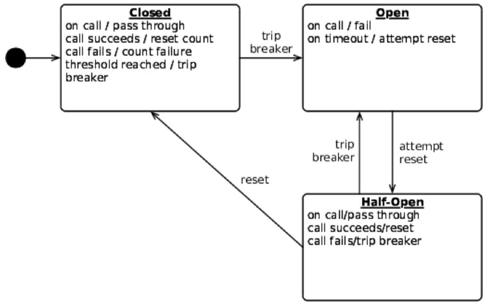
The goal of performance tactics is to generate a response to events arriving at the system under some time-based or resource-based constraint, where an event may be a single event or a stream that triggers computation. Performance tactics control the time or resources used to generate that response. The two basic contributors to response time and resource usage are processing time (when the system is actively working and consuming resources) and blocked time (when the system is unable to respond, due to resource contention, resource unavailability, or dependency on other computations). Accordingly, the tactic categories either reduce demand for resources (control resource demand) or make available resources handle the demand more effectively (manage resources).
성능 전술의 목표는 시간 기반 또는 자원 기반 제약 아래에서 시스템에 도착하는 이벤트에 대한 응답을 생성하는 것이며, 이벤트는 단일 이벤트일 수도 있고 스트림일 수도 있다. 성능 전술은 응답을 생성하는 데 드는 시간이나 자원을 제어한다. 응답 시간과 자원 사용의 두 가지 기본 요인은 처리 시간(시스템이 자원을 소비하며 능동적으로 동작하는 시간)과 차단 시간(자원 경합, 자원 가용성 부족, 다른 계산에 대한 의존성 때문에 응답할 수 없는 시간)이다. 따라서 전술 범주는 자원에 대한 수요를 줄이거나(자원 수요 제어) 보유한 자원이 수요를 더 효과적으로 처리하도록 하는(자원 관리) 것으로 나뉜다.
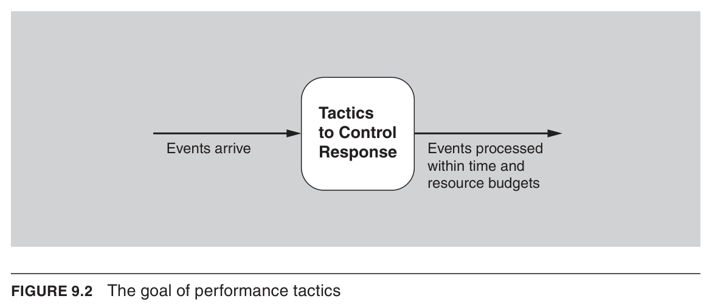
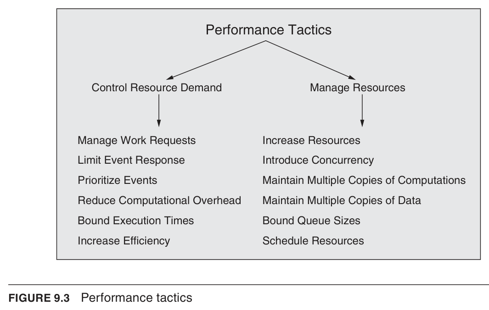
A common way to manage event arrivals from an external system is to put in place a service level agreement (SLA) that specifies the maximum event arrival rate you are willing to support. An SLA takes the form "The system or component will process X events arriving per unit time with a response time of Y," constraining both the system (it must provide that response) and the client (if it exceeds X requests per unit time, the response is not guaranteed). From the client's perspective, if it needs more than X requests per unit time serviced, it must use multiple instances of the element processing the requests. SLAs are one method for managing scalability for Internet-based systems.
외부 시스템으로부터의 이벤트 도착을 관리하는 일반적인 방법은 지원할 의향이 있는 최대 이벤트 도착률을 명시하는 서비스 수준 협약(SLA)을 마련하는 것이다. SLA는 "시스템 또는 구성요소가 단위 시간당 X개의 이벤트를 Y의 응답 시간으로 처리한다"는 형태로, 시스템(해당 응답을 제공해야 함)과 클라이언트(단위 시간당 X개를 초과하면 응답이 보장되지 않음) 모두를 제약한다. 클라이언트가 단위 시간당 X개를 초과하는 요청 처리를 필요로 한다면, 요청을 처리하는 요소의 여러 인스턴스를 사용해야 한다. SLA는 인터넷 기반 시스템의 확장성을 관리하는 한 가지 방법이다.
In cases where the system cannot maintain adequate response levels, you can reduce the sampling frequency of the stimuli—for example, the rate at which sensor data is received or the number of video frames processed per second. The price paid is the fidelity of the video stream or the information gathered from the sensor data, but this is viable if the result is "good enough." It is commonly used in signal processing systems where different codices can be chosen with different sampling rates and data formats, seeking to maintain predictable levels of latency. Some systems manage the sampling rate dynamically in response to latency measures or accuracy needs.
시스템이 적절한 응답 수준을 유지할 수 없는 경우, 자극의 샘플링 빈도를 줄일 수 있다. 예를 들어 센서로부터 데이터를 받는 속도나 초당 처리하는 비디오 프레임 수를 낮추는 것이다. 그 대가는 비디오 스트림의 충실도나 센서 데이터로부터 얻는 정보의 손실이지만, 결과가 "충분히 좋다면" 실행 가능한 전략이다. 이는 서로 다른 샘플링 비율과 데이터 형식을 가진 코덱을 선택할 수 있는 신호 처리 시스템에서 흔히 사용되며, 예측 가능한 지연 수준을 유지하려는 설계 선택이다. 일부 시스템은 지연 측정값이나 정확도 요구에 따라 샘플링 비율을 동적으로 관리한다.
For events that make it into the system, several approaches reduce the work involved in handling each event. Reduce indirection: removing intermediaries (so important for modifiability) improves latency, a classic modifiability/performance tradeoff; clever code optimization or brokers that enable direct client–server communication after setup can keep modifiability while reducing or eliminating costly runtime indirection. Co-locate communicating resources: since context switching and intercomponent communication costs add up (especially across network nodes), co-locating resources—on the same processor, in the same runtime component to avoid even a subroutine call, or on the same data-center rack—reduces overhead. Periodic cleaning: periodically cleaning up resources that have become inefficient, such as recalculating hash tables and virtual memory maps (and even periodic system reboots), reduces overhead.
시스템에 들어온 이벤트에 대해, 각 이벤트 처리에 드는 작업량을 줄이는 여러 접근법이 있다. 간접 참조 감소: 수정용이성에 중요한 중개자를 제거하면 지연이 개선되며 이는 전형적인 수정용이성/성능 트레이드오프이다. 영리한 코드 최적화나, 초기 설정 후 직접 클라이언트–서버 통신을 가능하게 하는 브로커를 통해 수정용이성을 유지하면서 런타임의 비싼 간접 참조를 줄이거나 제거할 수 있다. 통신 자원의 동일 위치 배치(Co-location): 문맥 전환과 구성요소 간 통신 비용이 누적되므로(특히 네트워크상의 다른 노드에 있을 때), 자원을 같은 프로세서, 서브루틴 호출 비용조차 피하기 위한 같은 런타임 구성요소, 또는 데이터센터의 같은 랙에 함께 배치하면 오버헤드가 줄어든다. 주기적 정리: 해시 테이블과 가상 메모리 맵의 재계산·재초기화처럼 비효율적이 된 자원을 주기적으로 정리하는 것(심지어 주기적 시스템 재부팅 포함)이 오버헤드를 줄인다.
Faster processors, additional processors, additional memory, and faster networks all have the potential to improve performance. Cost is usually a consideration in the choice of resources. Nevertheless, increasing resources is, in many cases, the cheapest way to get immediate improvement.
더 빠른 프로세서, 추가 프로세서, 추가 메모리, 더 빠른 네트워크는 모두 성능을 향상시킬 잠재력이 있다. 자원 선택에서는 보통 비용이 고려 사항이 된다. 그럼에도 불구하고 자원을 늘리는 것은 많은 경우 즉각적인 개선을 얻는 가장 저렴한 방법이다.
If requests can be processed in parallel, the blocked time can be reduced. Concurrency can be introduced by processing different streams of events on different threads or by creating additional threads to process different sets of activities. Once concurrency has been introduced, you can choose scheduling policies to achieve your desired goals using the schedule resources tactic.
요청을 병렬로 처리할 수 있다면 차단 시간을 줄일 수 있다. 동시성은 서로 다른 이벤트 스트림을 서로 다른 스레드에서 처리하거나, 서로 다른 활동 집합을 처리하기 위해 추가 스레드를 생성함으로써 도입할 수 있다. 동시성이 도입되면, 자원 스케줄링 전술을 사용하여 원하는 목표를 달성하기 위한 스케줄링 정책을 선택할 수 있다.
This tactic reduces the contention that would occur if all requests for service were allocated to a single instance. Replicated services in a microservice architecture or replicated web servers in a server pool are examples of replicas of computation. A load balancer is a piece of software that assigns new work to one of the available duplicate servers; criteria for assignment vary but can be as simple as a round-robin scheme or assigning the next request to the least busy server.
이 전술은 모든 서비스 요청이 단일 인스턴스에 할당될 때 발생할 경합을 줄인다. 마이크로서비스 아키텍처에서의 복제된 서비스나 서버 풀에서의 복제된 웹 서버가 계산 복제본의 예이다. 로드 밸런서는 사용 가능한 중복 서버 중 하나에 새 작업을 할당하는 소프트웨어로, 할당 기준은 다양하지만 라운드로빈 방식이나 가장 한가한 서버에 다음 요청을 할당하는 것처럼 단순할 수 있다.
Two common examples are data replication and caching. Data replication involves keeping separate copies of the data to reduce contention from multiple simultaneous accesses; because the replicated data is usually a copy of existing data, keeping the copies consistent and synchronized becomes a responsibility the system must assume. Caching also involves keeping copies of data (one set possibly being a subset of the other) but on storage with different access speeds, such as memory versus secondary storage or local versus remote communication. Another responsibility with caching is choosing the data to be cached: some caches merely keep copies of whatever was recently requested, but it is also possible to predict users' future requests based on behavior patterns and begin the necessary calculations or prefetches before the user makes them.
두 가지 일반적인 예는 데이터 복제와 캐싱이다. 데이터 복제는 다중 동시 접근으로 인한 경합을 줄이기 위해 데이터의 별도 복사본을 유지하는 것이다. 복제되는 데이터는 보통 기존 데이터의 복사본이므로, 복사본들을 일관되고 동기화된 상태로 유지하는 것은 시스템이 떠맡아야 할 책임이 된다. 캐싱도 데이터의 복사본을 유지하지만(한 집합이 다른 집합의 부분집합일 수 있음) 메모리 대 보조 저장장치 속도, 또는 로컬 대 원격 통신 속도처럼 접근 속도가 다른 저장소에 둔다. 캐싱의 또 다른 책임은 캐시할 데이터를 선택하는 것으로, 일부 캐시는 단지 최근 요청된 것의 복사본을 유지하지만, 행동 패턴에 기반해 사용자의 미래 요청을 예측하여 사용자가 요청하기 전에 필요한 계산이나 프리페치를 시작하는 것도 가능하다.
One way to think about achieving security in a system is to focus on physical security: secure installations permit only limited access (fences, checkpoints), have means of detecting intruders (badges), have deterrence mechanisms (armed guards), have reaction mechanisms (automatic locking of doors), and have recovery mechanisms (off-site backup). These lead to four categories of security tactics: detect, resist, react, and recover. The goal of security tactics is to control an attack so that the system detects, resists, or recovers from it.
시스템 보안을 달성하는 한 가지 방법은 물리적 보안에 주목하는 것이다. 안전한 시설은 출입을 제한하고(울타리, 검문소), 침입자를 탐지하는 수단(출입증)을 갖추며, 억제 장치(무장 경비원), 대응 장치(자동 문 잠금), 복구 장치(외부 백업)를 갖춘다. 이로부터 탐지(detect), 저항(resist), 대응(react), 복구(recover)라는 네 가지 보안 전술 범주가 도출되며, 보안 전술의 목표는 공격을 통제하여 시스템이 탐지·저항·복구하도록 하는 것이다.
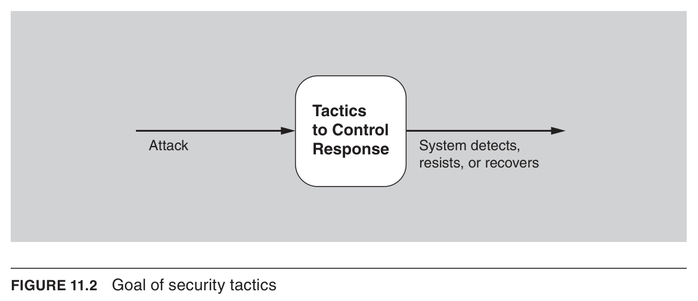
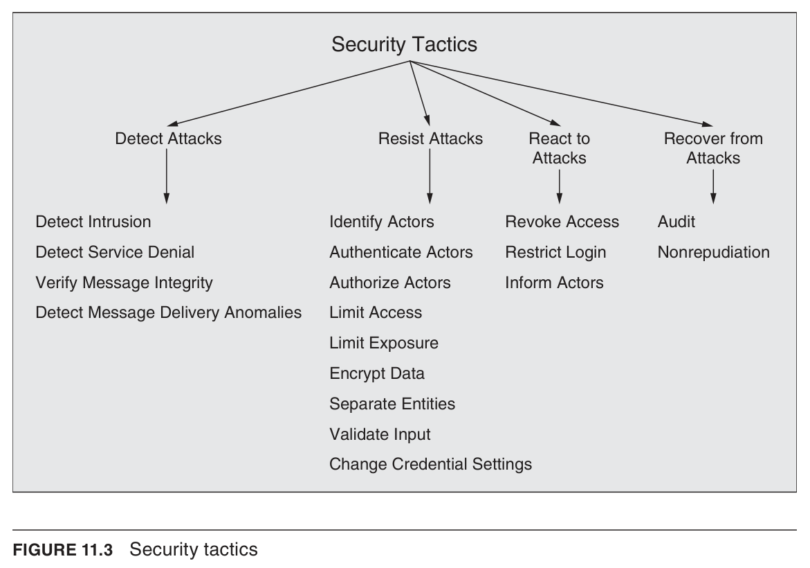
This tactic employs techniques such as checksums or hash values to verify the integrity of messages, resource files, deployment files, and configuration files. A checksum is a validation mechanism in which the system separately maintains redundant information for files and messages and uses it to verify the file or message. A hash value is a unique string generated by a hashing function whose input could be files or messages; even a slight change in the original results in a significant change in the hash value.
이 전술은 체크섬이나 해시값 같은 기법을 사용하여 메시지, 리소스 파일, 배포 파일, 구성 파일의 무결성을 검증한다. 체크섬은 시스템이 파일과 메시지에 대한 중복 정보를 별도로 유지하고 이를 이용해 파일이나 메시지를 검증하는 메커니즘이다. 해시값은 해싱 함수가 생성하는 고유 문자열로, 원본이 조금만 바뀌어도 해시값이 크게 달라진다.
Authentication means ensuring that an actor is actually who or what it purports to be. Passwords, one-time passwords, digital certificates, two-factor authentication, and biometric identification provide a means for authentication. Another example is CAPTCHA, a type of challenge-response test used to determine whether the user is human. Systems may require periodic reauthentication, such as when a smartphone automatically locks after a period of inactivity.
인증은 행위자가 실제로 자신이 주장하는 대상이 맞는지 확인하는 것을 의미한다. 비밀번호, 일회용 비밀번호, 디지털 인증서, 이중 인증, 생체 인식 등이 인증 수단을 제공한다. 또 다른 예로 사용자가 사람인지 판별하는 도전-응답 테스트인 CAPTCHA가 있다. 비활성 후 스마트폰이 자동 잠기는 경우처럼 시스템은 주기적 재인증을 요구할 수 있다.
Authorization means ensuring that an authenticated actor has the rights to access and modify either data or services. This mechanism is usually enabled by providing some access control mechanisms within a system. Access control can be assigned per actor, per actor class, or per role.
인가는 인증된 행위자가 데이터나 서비스에 접근하고 수정할 권한을 갖고 있는지 보장하는 것을 의미한다. 이 메커니즘은 보통 시스템 내에 접근 제어 메커니즘을 제공함으로써 구현된다. 접근 제어는 행위자별, 행위자 클래스별, 또는 역할별로 할당될 수 있다.
This tactic focuses on minimizing the effects of damage caused by a hostile action. It is a passive defense, since it does not proactively prevent attackers from doing harm. Limiting exposure is typically realized by reducing the amount of data or services that can be accessed through a single access point, and hence compromised in a single attack.
이 전술은 적대적 행위로 인한 피해의 영향을 최소화하는 데 초점을 둔다. 공격자가 해를 끼치는 것을 능동적으로 막지는 않으므로 수동적 방어에 해당한다. 노출 제한은 보통 단일 접근 지점을 통해 접근할 수 있는, 즉 단일 공격으로 침해될 수 있는 데이터나 서비스의 양을 줄임으로써 실현된다.
Confidentiality is usually achieved by applying some form of encryption to data and to communication. Encryption provides extra protection to persistently maintained data beyond that available from authorization, while communication links may not have authorization controls at all. In such cases, encryption is the only protection for passing data over publicly accessible communication links. Encryption can be symmetric (readers and writers use the same key) or asymmetric (readers and writers use paired public and private keys).
기밀성은 보통 데이터와 통신에 어떤 형태의 암호화를 적용함으로써 달성된다. 암호화는 지속적으로 유지되는 데이터에 인가 이상의 추가 보호를 제공하며, 반면 통신 링크에는 인가 제어가 아예 없을 수도 있다. 이런 경우 암호화는 공개적으로 접근 가능한 통신 링크를 통해 전달되는 데이터에 대한 유일한 보호 수단이다. 암호화는 대칭(읽는 쪽과 쓰는 쪽이 같은 키 사용) 또는 비대칭(공개 키와 개인 키 쌍 사용) 방식일 수 있다.
Cleaning and checking input as it is received by a system, or portion of a system, is an important early line of defense in resisting attacks. This is often implemented using a security framework or validation class to perform actions such as filtering, canonicalization, and sanitization of input. Data validation is the main form of defense against attacks such as SQL injection, in which malicious code is inserted into SQL statements, and cross-site scripting (XSS), in which malicious code from a server runs on a client.
시스템이나 시스템의 일부가 입력을 받을 때 그 입력을 정리하고 검사하는 것은 공격에 저항하는 중요한 초기 방어선이다. 이는 흔히 보안 프레임워크나 검증 클래스를 사용하여 입력의 필터링, 정규화, 정화 같은 작업을 수행함으로써 구현된다. 데이터 검증은 SQL 문에 악성 코드를 삽입하는 SQL 인젝션, 그리고 서버의 악성 코드가 클라이언트에서 실행되는 교차 사이트 스크립팅(XSS) 같은 공격에 대한 주된 방어 형태다.
We audit systems—that is, keep a record of user and system actions and their effects—to help trace the actions of, and to identify, an attacker. We may analyze audit trails to attempt to prosecute attackers or to create better defenses in the future.
우리는 공격자의 행위를 추적하고 공격자를 식별하는 데 도움을 주기 위해 시스템을 감사한다. 즉, 사용자와 시스템의 행위 및 그 영향을 기록한다. 감사 추적(audit trail)을 분석하여 공격자를 기소하려 하거나 향후 더 나은 방어를 마련할 수 있다.
Once a system is executing, usability is enhanced by giving the user feedback and allowing appropriate responses; the support-user-initiative tactics help users correct errors or work more efficiently.
시스템이 실행 중일 때, 사용자에게 피드백을 제공하고 적절한 대응을 허용함으로써 사용성을 높인다. 사용자 주도 지원 전술은 사용자가 오류를 바로잡거나 더 효율적으로 작업하도록 돕는다.
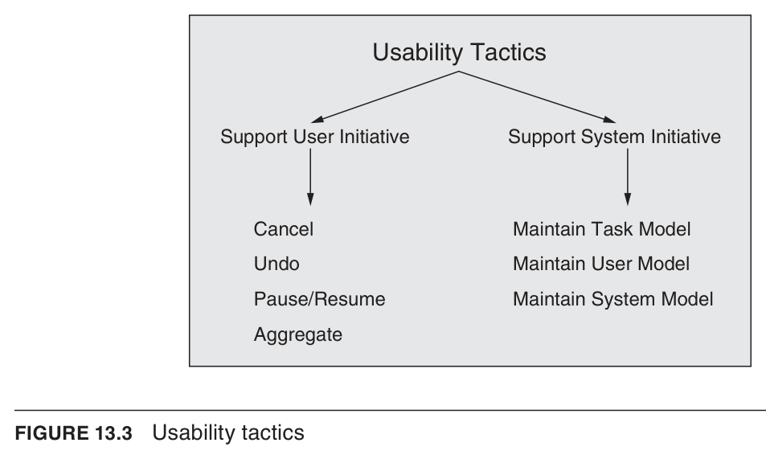
When the user issues a cancel command, the system must be listening for it, which requires a constant listener that is not blocked by whatever activity is being canceled. The activity being canceled must be terminated and any resources it was using must be freed. Components collaborating with the canceled activity must also be informed so they can take appropriate action.
사용자가 취소 명령을 내리면 시스템은 이를 항상 수신하고 있어야 하며, 이를 위해 취소 대상 작업에 의해 차단되지 않는 상시 리스너가 필요하다. 취소되는 작업은 종료되어야 하고 사용 중이던 자원은 해제되어야 한다. 또한 협력하던 컴포넌트들에도 이를 알려 적절히 대응하도록 해야 한다.
To support undo, the system must maintain enough information about system state so that an earlier state can be restored at the user's request, taking the form of state snapshots (such as checkpoints) or a set of reversible operations. Not all operations can be easily reversed; some, like changing all "a"s to "b"s, require a more elaborate record, and some cannot be undone at all. Undo comes in flavors: some systems allow only a single undo, while others step back through many previous states up to some limit or all the way to when the application was last opened.
실행 취소를 지원하려면, 시스템은 사용자의 요청에 따라 이전 상태를 복원할 수 있도록 시스템 상태 정보를 충분히 유지해야 하며, 이는 체크포인트 같은 상태 스냅숏이나 가역적 연산 집합 형태를 띤다. 모든 연산을 쉽게 되돌릴 수 있는 것은 아니어서, 모든 "a"를 "b"로 바꾸는 경우처럼 더 정교한 기록이 필요하거나 아예 되돌릴 수 없는 연산도 있다. 실행 취소에는 여러 방식이 있는데, 단일 취소만 허용하는 시스템도 있고, 일정 한계까지 혹은 앱을 마지막으로 연 시점까지 여러 이전 상태로 거슬러 가는 시스템도 있다.
When a user has initiated a long-running operation, such as downloading a large file or set of files from a server, it is often useful to provide the ability to pause and resume the operation. Pausing a long-running operation may be done to temporarily free resources so that they can be reallocated to other tasks.
사용자가 서버에서 대용량 파일이나 파일 집합을 내려받는 것처럼 오래 걸리는 작업을 시작했을 때, 그 작업을 일시 정지하고 재개하는 기능을 제공하는 것이 유용한 경우가 많다. 오래 걸리는 작업을 일시 정지하는 것은 자원을 일시적으로 해제하여 다른 작업에 재할당하기 위함일 수 있다.
When a user is performing repetitive operations, or operations that affect a large number of objects in the same way, it is useful to provide the ability to aggregate the lower-level objects into a single group so the operation can be applied to the group. This frees the user from the drudgery, and the potential for mistakes, of doing the same operation repeatedly. An example is aggregating all the objects in a slide and changing the text to 14-point font.
사용자가 반복적인 연산을 수행하거나 많은 객체에 동일한 방식으로 영향을 주는 연산을 수행할 때, 하위 객체들을 하나의 그룹으로 묶어 그 그룹에 연산을 적용할 수 있게 하는 것이 유용하다. 이는 같은 연산을 반복하는 수고와 실수 가능성에서 사용자를 해방시킨다. 예를 들어 슬라이드의 모든 객체를 묶어 텍스트를 14포인트 글꼴로 바꾸는 것이 있다.
This model explicitly represents the user's knowledge of the system, the user's behavior in terms of expected response time, and other aspects specific to a user or a class of users. For example, language-learning apps constantly monitor the areas where a user makes mistakes and then provide additional exercises to correct those behaviors. A special case of this tactic is commonly found in user interface customization, wherein a user can explicitly modify the system's user model.
이 모델은 시스템에 대한 사용자의 지식, 예상 응답 시간 측면의 사용자 행동, 그리고 특정 사용자나 사용자 부류에 고유한 그 밖의 측면을 명시적으로 표현한다. 예를 들어 언어 학습 앱은 사용자가 실수하는 영역을 지속적으로 관찰한 뒤 그 행동을 교정하기 위한 추가 연습을 제공한다. 이 전술의 특수한 사례는 사용자 인터페이스 맞춤 설정에서 흔히 볼 수 있으며, 여기서 사용자는 시스템의 사용자 모델을 명시적으로 수정할 수 있다.
Modifiability tactics aim to control the complexity, time, and cost of making changes, building on the foundational design measures of coupling and cohesion. Coupling is the probability that a modification to one module will propagate to another; high coupling is an enemy of modifiability, so tactics that reduce it place intermediaries between otherwise highly coupled modules. Cohesion measures how strongly a module's responsibilities are related (its "unity of purpose"); high cohesion is good for modifiability, and it can be improved by removing responsibilities unaffected by anticipated changes. Two further parameters round out the model: module size (larger modules are harder, costlier, and more bug-prone to change) and binding time (an architecture prepared to bind changes late in the life cycle, on average, costs less), so tactics work by reducing size, increasing cohesion, reducing coupling, and deferring binding time.
변경용이성 전술의 목표는 변경의 복잡도, 시간, 비용을 제어하는 것이며, 이는 설계의 기본 척도인 결합도(coupling)와 응집도(cohesion)에 기반한다. 결합도는 한 모듈의 수정이 다른 모듈로 전파될 확률로, 높은 결합도는 변경용이성의 적이므로 이를 줄이는 전술은 강하게 결합된 두 모듈 사이에 중개자를 둔다. 응집도는 한 모듈의 책임들이 얼마나 강하게 관련되어 있는지("목적의 단일성")를 측정하며, 높은 응집도는 변경용이성에 좋고 예상되는 변경의 영향을 받지 않는 책임을 제거함으로써 향상될 수 있다. 모델을 완성하는 두 가지 추가 변수는 모듈 크기(큰 모듈일수록 변경이 더 어렵고 비싸며 결함이 많음)와 바인딩 시점(생애주기 후반에 변경을 바인딩하도록 준비된 아키텍처가 평균적으로 비용이 적게 듦)이며, 따라서 전술은 크기 축소, 응집도 증가, 결합도 감소, 바인딩 시점 연기를 통해 작동한다.
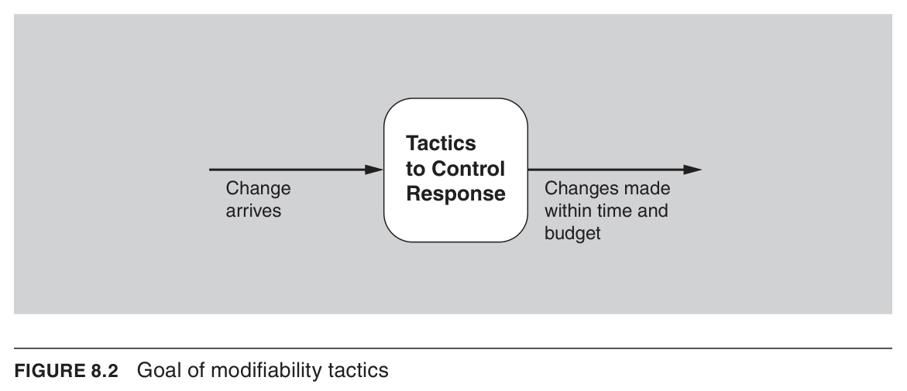
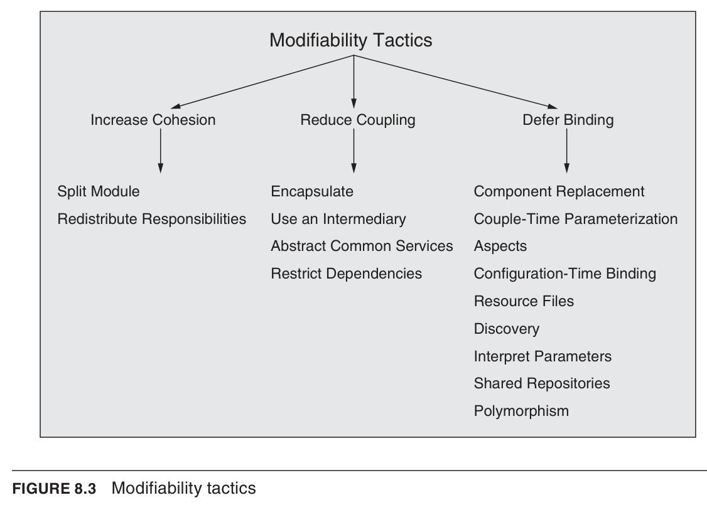
If the module being modified includes responsibilities that are not cohesive, modification costs will likely be high. Refactoring the module into several more cohesive modules should reduce the average cost of future changes. Splitting a module should not simply place half of the lines of code into each submodule; instead, it should sensibly and appropriately result in a series of submodules that are cohesive on their own.
수정 대상 모듈이 응집적이지 않은 책임들을 포함하고 있다면 수정 비용이 높아질 가능성이 크다. 모듈을 더 응집적인 여러 모듈로 리팩터링하면 향후 변경의 평균 비용을 줄일 수 있다. 모듈 분할은 단순히 코드 라인의 절반씩을 각 하위 모듈에 나눠 넣는 것이 아니라, 각각이 그 자체로 응집적인 하위 모듈들이 되도록 합리적이고 적절하게 이루어져야 한다.
If similar responsibilities are sprinkled across several distinct modules, they should be placed together; this refactoring may involve creating a new module or moving responsibilities to existing ones. One method for identifying responsibilities to be moved is to hypothesize a set of likely changes as scenarios. If scenarios consistently affect just one part of a module, the other parts may have separate responsibilities and should be moved; conversely, if some scenarios require modifications to multiple modules, the affected responsibilities should perhaps be grouped together into a new module.
유사한 책임들이 여러 별개의 모듈에 흩어져 있다면 이를 한곳에 모아야 하며, 이 리팩터링은 새 모듈을 만들거나 기존 모듈로 책임을 옮기는 것을 포함할 수 있다. 옮길 책임을 식별하는 한 가지 방법은 발생 가능한 변경 집합을 시나리오로 가정하는 것이다. 시나리오들이 일관되게 모듈의 한 부분만 영향을 준다면 다른 부분은 별개의 책임을 가질 수 있으므로 옮겨야 하고, 반대로 일부 시나리오가 여러 모듈의 수정을 요구한다면 영향을 받는 책임들을 새 모듈로 묶는 것이 좋다.
This tactic restricts which modules a given module interacts with or depends on. In practice it is implemented by restricting a module's visibility (when developers cannot see an interface, they cannot employ it) and by authorization (restricting access to only authorized modules). The restrict dependencies tactic is seen in layered architectures, where a layer is allowed to use only lower layers (sometimes only the next lower layer), and in the use of wrappers, where external entities can see and depend on only the wrapper and not the internal functionality it wraps.
이 전술은 특정 모듈이 상호작용하거나 의존하는 모듈을 제한한다. 실무에서는 모듈의 가시성 제한(개발자가 인터페이스를 볼 수 없으면 사용할 수 없음)과 권한 부여(허가된 모듈만 접근하도록 제한)를 통해 구현된다. 의존성 제한 전술은 한 계층이 하위 계층(때로는 바로 아래 계층만)만 사용할 수 있는 계층형 아키텍처와, 외부 개체가 래퍼만 보고 의존하며 그것이 감싸는 내부 기능에는 접근하지 못하게 하는 래퍼 사용에서 볼 수 있다.
An energy efficiency scenario is catalyzed by the desire to conserve or manage energy while still providing the required (though not necessarily full) functionality, and it succeeds when the energy responses are achieved within acceptable time, cost, and quality constraints. At its heart, energy efficiency is about effectively utilizing resources. The tactics are grouped into three broad categories: resource monitoring, resource allocation, and resource adaptation. Here a "resource" means a computational device that consumes energy while providing its functionality, analogous to a hardware resource such as CPUs, data stores, network communications, and memory.
에너지 효율 시나리오는 필요한(반드시 전체 기능은 아닐 수 있는) 기능을 제공하면서 에너지를 절약·관리하려는 욕구에서 비롯되며, 에너지 응답이 허용 가능한 시간·비용·품질 제약 안에서 달성될 때 성공한다. 본질적으로 에너지 효율은 자원을 효과적으로 활용하는 것이다. 전술은 자원 모니터링, 자원 할당, 자원 적응의 세 가지 큰 범주로 묶인다. 여기서 "자원"은 기능을 제공하면서 에너지를 소비하는 계산 장치를 의미하며, 이는 CPU·데이터 저장소·네트워크 통신·메모리 같은 하드웨어 자원의 정의와 유사하다.
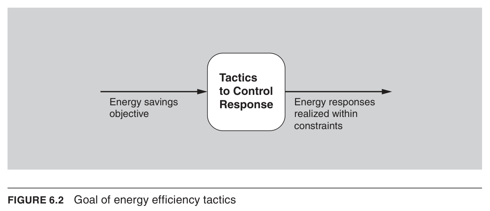
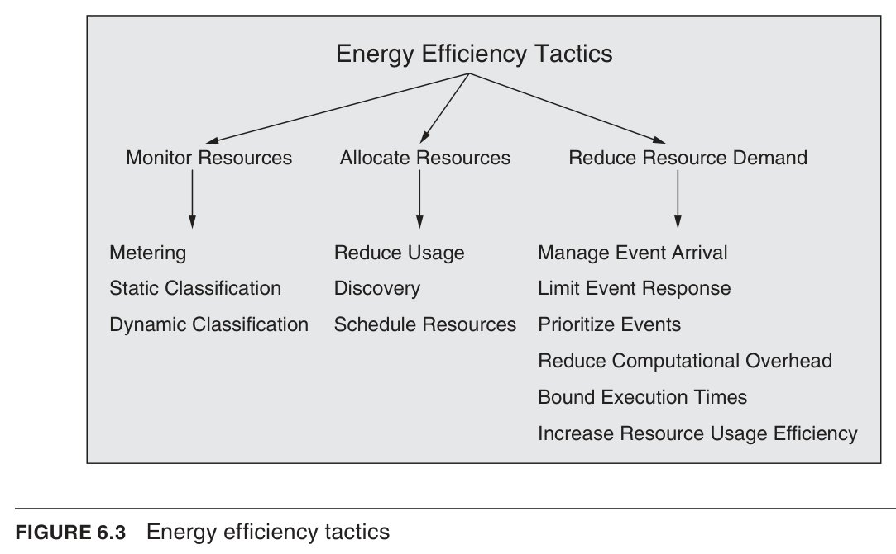
The metering tactic collects data about the energy consumption of computational resources via a sensor infrastructure, in near real time. At the coarsest level, an entire data center's consumption can be read from its power meter, while individual servers or hard drives can be measured with external tools (amp meters, watt-hour meters) or built-in tools such as metered rack PDUs and ASICs. In battery-operated systems, the energy remaining in a battery can be determined through a battery management system, a component of modern batteries.
계측 전술은 센서 인프라를 통해 거의 실시간으로 계산 자원의 에너지 소비 데이터를 수집한다. 가장 거친 수준에서는 데이터센터 전체 소비를 전력계로 측정할 수 있고, 개별 서버나 하드 드라이브는 전류계·전력량계 같은 외부 도구나 계측형 랙 PDU, ASIC 같은 내장 도구로 측정할 수 있다. 배터리 구동 시스템에서는 현대 배터리의 구성요소인 배터리 관리 시스템을 통해 남은 에너지를 파악할 수 있다.
Usage can be reduced at the device level through device-specific activities such as lowering a display's refresh rate or darkening the background, and by removing or deactivating resources when demands no longer require them. This may involve spinning down hard drives, turning off CPUs or servers, running CPUs at a slower clock rate, or shutting down current to unused blocks of the processor. It can also take the form of consolidating VMs onto the minimum number of physical servers and shutting down idle resources. In mobile applications, energy can be saved by offloading part of the computation to the cloud, assuming communication consumes less energy than the computation itself.
사용량은 디스플레이 새로 고침 빈도를 낮추거나 배경을 어둡게 하는 등 장치별 활동으로, 그리고 더 이상 필요 없는 자원을 제거·비활성화함으로써 장치 수준에서 줄일 수 있다. 여기에는 하드 드라이브 정지, CPU·서버 끄기, CPU를 더 느린 클럭으로 구동, 사용되지 않는 프로세서 블록의 전류 차단 등이 포함된다. 또한 VM을 최소 수의 물리 서버로 통합(consolidation)하고 유휴 자원을 끄는 형태를 취할 수도 있다. 모바일 애플리케이션에서는 통신의 에너지 소비가 계산의 에너지 소비보다 낮다는 가정하에, 계산의 일부를 클라우드로 보내 에너지를 절약할 수 있다.
This category of tactics is detailed in Chapter 9 and includes manage event arrival, limit event response, prioritize events (perhaps letting low-priority events go unserviced), reduce computational overhead, bound execution times, and increase resource usage efficiency. All of these directly increase energy efficiency by doing less work. This is complementary to reduce usage: whereas reduce usage assumes demand stays the same, the reduce resource demand tactics are a means of explicitly managing and reducing the demand itself.
이 범주의 전술은 9장에서 자세히 다루며, 이벤트 도착 관리, 이벤트 응답 제한, 이벤트 우선순위 지정(낮은 우선순위 이벤트는 처리하지 않을 수도 있음), 계산 오버헤드 감소, 실행 시간 한정, 자원 사용 효율 증가를 포함한다. 이들 모두는 작업을 덜 함으로써 직접적으로 에너지 효율을 높인다. 이는 사용량 감소와 상호 보완적이다. 사용량 감소는 수요가 동일하게 유지된다고 가정하는 반면, 자원 수요 감소 전술은 수요 자체를 명시적으로 관리하고 줄이는 수단이다.
Deployability refers to a property of software indicating that it may be deployed—that is, allocated to an environment for execution—within a predictable and acceptable amount of time and effort. Moreover, if the new deployment is not meeting its specifications, it may be rolled back, again within a predictable and acceptable amount of time and effort. As the world moves increasingly toward virtualization and cloud infrastructures, and as the scale of deployed software-intensive systems inevitably increases, it is one of the architect's responsibilities to ensure that deployment is done in an efficient and predictable way, minimizing overall system risk. To achieve these goals, an architect needs to consider how an executable is updated on a host platform, and how it is subsequently invoked, measured, monitored, and controlled; mobile systems in particular present a deployability challenge in how they are updated, because of concerns about bandwidth.
배포성(Deployability)은 소프트웨어가 예측 가능하고 허용 가능한 시간과 노력 안에서 배포될 수 있음을, 즉 실행을 위해 환경에 할당될 수 있음을 나타내는 속성이다. 또한 새 배포가 사양을 충족하지 못하면, 역시 예측 가능하고 허용 가능한 시간과 노력 안에서 롤백될 수 있어야 한다. 세상이 점점 더 가상화와 클라우드 인프라로 이동하고 배포되는 소프트웨어 집약적 시스템의 규모가 필연적으로 커짐에 따라, 배포가 효율적이고 예측 가능하게 이루어져 전체 시스템 위험을 최소화하도록 보장하는 것은 아키텍트의 책임 중 하나이다. 이러한 목표를 달성하려면 아키텍트는 실행 파일이 호스트 플랫폼에서 어떻게 갱신되고 이후 어떻게 호출·측정·모니터링·제어되는지를 고려해야 하며, 특히 모바일 시스템은 대역폭 우려 때문에 갱신 방식에서 배포성의 어려움을 제기한다.
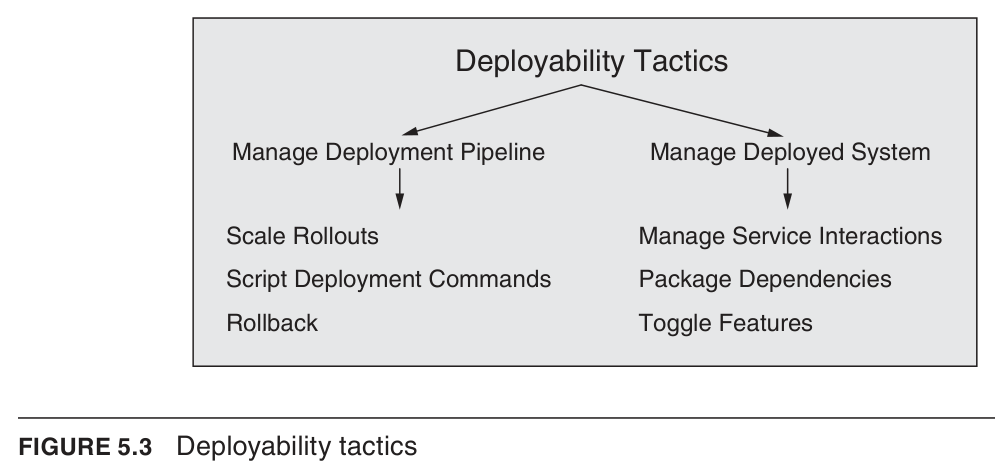
Scalability is about accommodating more of something; in terms of performance, it means adding more resources. Horizontal scalability (scaling out) refers to adding more resources to logical units, such as adding another server to a cluster, while vertical scalability (scaling up) refers to adding more resources to a physical unit, such as adding memory to a single computer. The challenge with either type is effectively utilizing the additional resources—meaning they produce a measurable improvement in some system quality, did not require undue effort to add, and did not unduly disrupt operations. In cloud-based environments, horizontal scalability is called elasticity, a property that lets a customer add or remove virtual machines from the resource pool.
확장성(Scalability)은 무언가를 더 많이 수용하는 것에 관한 것으로, 성능 측면에서는 자원을 더 추가하는 것을 의미한다. 수평 확장(scaling out)은 클러스터에 서버를 추가하는 것처럼 논리적 단위에 자원을 더하는 것이고, 수직 확장(scaling up)은 단일 컴퓨터에 메모리를 추가하는 것처럼 물리적 단위에 자원을 더하는 것이다. 두 유형 모두에서 과제는 추가된 자원을 효과적으로 활용하는 것인데, 이는 자원이 어떤 시스템 품질의 측정 가능한 개선을 가져오고, 추가에 과도한 노력이 들지 않으며, 운영을 과도하게 방해하지 않음을 의미한다. 클라우드 기반 환경에서 수평 확장은 탄력성(elasticity)이라 불리며, 이는 고객이 자원 풀에서 가상 머신을 추가하거나 제거할 수 있게 하는 속성이다.
Portability refers to the ease with which software built to run on one platform can be changed to run on a different platform. It is achieved by minimizing platform dependencies in the software, isolating dependencies to well-identified locations, and writing the software to run on a "virtual machine" (such as a Java Virtual Machine) that encapsulates all the platform dependencies. Portability scenarios deal with moving software to a new platform by expending no more than a certain level of effort, or by counting the number of places in the software that would have to change. Architectural approaches to portability are intertwined with those for deployability, addressed in Chapter 5.
이식성(Portability)은 한 플랫폼에서 실행되도록 만들어진 소프트웨어를 다른 플랫폼에서 실행되도록 변경하는 용이성을 가리킨다. 이는 소프트웨어의 플랫폼 의존성을 최소화하고, 의존성을 잘 식별된 위치로 격리하며, 모든 플랫폼 의존성을 캡슐화하는 "가상 머신"(예: 자바 가상 머신) 위에서 실행되도록 소프트웨어를 작성함으로써 달성된다. 이식성 시나리오는 일정 수준 이하의 노력만으로 소프트웨어를 새 플랫폼으로 옮기거나, 변경해야 하는 소프트웨어 내 지점의 수를 세는 것으로 다룬다. 이식성에 대한 아키텍처 접근법은 5장에서 다루는 배포성에 대한 접근법과 서로 얽혀 있다.
The Architecture Tradeoff Analysis Method (ATAM) is the formalized process the authors use to perform architecture evaluations. It has been used for more than two decades to evaluate software architectures of large systems in domains ranging from automotive to financial to defense. ATAM is designed so that evaluators do not need prior familiarity with the architecture or its business goals, and the system need not even be constructed yet; the exercise may be held in person or remotely. It requires the cooperation of three groups: an external evaluation team (typically three to five people, each playing assigned roles such as Team Leader, Evaluation Leader, Scenario Scribe, E-Scribe, and Questioner); project decision makers (empowered to speak for or change the project, always including the architect, who must willingly participate); and architecture stakeholders (developers, testers, integrators, maintainers, performance engineers, users, etc.—roughly 10 to 25 for a large enterprise-critical architecture) who articulate the quality attribute goals the architecture must meet. The exercise produces outputs including a concise architecture presentation, articulated business goals, prioritized quality attribute scenarios, a set of risks and non-risks, risk themes, a mapping of architectural decisions to quality requirements, and identified sensitivity points and tradeoff points. ATAM is spread over four phases: Phase 0 (Partnership and Preparation), Phases 1 and 2 (collectively "Evaluation"), and Phase 3 (Follow-up, producing and delivering the final report). The analysis phases (1 and 2) consist of nine steps: steps 1–6 are done in phase 1 with the evaluation team and decision makers, then in phase 2 steps 1–6 are summarized and steps 7–9 are carried out with all stakeholders.
ATAM(아키텍처 트레이드오프 분석 방법)은 저자들이 아키텍처 평가를 수행하기 위해 정형화한 프로세스로, 20년 넘게 자동차·금융·국방 등 다양한 분야의 대규모 시스템 아키텍처를 평가하는 데 사용되어 왔다. 평가자가 해당 아키텍처나 비즈니스 목표를 사전에 알 필요가 없도록 설계되었으며, 시스템이 아직 구축되지 않았어도 수행 가능하고 대면 또는 원격으로 진행할 수 있다. ATAM에는 세 그룹이 참여한다: (1) 외부 평가팀(보통 3~5명, 팀 리더·평가 리더·시나리오 기록자·전자 기록자·질문자 등 역할 수행), (2) 프로젝트 의사결정자(프로젝트를 대표하거나 변경 권한을 가진 사람들로, 반드시 자발적으로 참여하는 아키텍트 포함), (3) 아키텍처 이해관계자(개발자·테스터·통합자·유지보수자·성능 엔지니어·사용자 등으로, 대규모 핵심 아키텍처의 경우 약 10~25명이 참여하여 품질 속성 목표를 구체화). 산출물에는 간결한 아키텍처 발표, 명시된 비즈니스 목표, 우선순위가 매겨진 품질 속성 시나리오, 위험·비위험 집합, 위험 테마, 아키텍처 결정과 품질 요구사항의 매핑, 민감점 및 트레이드오프점이 포함된다. ATAM은 4개 단계(Phase 0 파트너십과 준비, Phase 1·2 평가, Phase 3 후속조치)로 구성되며, 분석 단계(1·2)는 아홉 개의 스텝으로 이루어진다. 스텝 1~6은 평가팀과 의사결정자가 phase 1에서 수행하고, phase 2에서는 스텝 1~6을 요약한 뒤 모든 이해관계자와 함께 스텝 7~9를 수행한다.
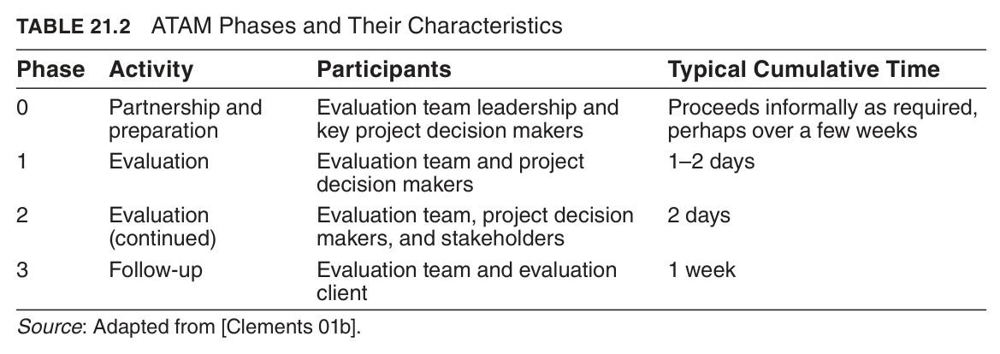
Step 1 — Present the ATAM: The evaluation leader presents the ATAM to the assembled project representatives, explaining the process, answering questions, and setting context and expectations. Step 2 — Present the Business Goals: A project decision maker presents a system overview from a business perspective—most important functions; technical, managerial, economic, or political constraints; business goals and context; major stakeholders; and architectural drivers. Step 3 — Present the Architecture: The lead architect describes the architecture at an appropriate level of detail, covering constraints and especially the architectural approaches (patterns/tactics) used, using architectural views as the primary vehicle. Step 4 — Identify the Architectural Approaches: The architecture is analyzed by understanding its approaches, exploiting the known ways each pattern/tactic affects particular quality attributes. Step 5 — Generate a Quality Attribute Utility Tree: Broad goals from step 2 are made concrete as quality attribute scenarios in a utility tree; the architect rates technical difficulty/risk (H, M, L) and decision makers rate business importance. Step 6 — Analyze the Architectural Approaches: The highest-ranked scenarios are examined one at a time, documenting relevant decisions and cataloging risks, non-risks, sensitivity points, and tradeoffs; this concludes phase 1. Step 7 — Brainstorm and Prioritize Scenarios: Stakeholders brainstorm scenarios meaningful to their roles, merge duplicates, and vote (each gets votes equal to 30% of the scenario count, rounded up); the result is compared with the utility tree. Step 8 — Analyze the Architectural Approaches (again): The architect analyzes the highest-ranked newly generated scenarios (typically the top five to ten), repeating step 6's activities. Step 9 — Present the Results: Risks are grouped into risk themes tied back to the step-2 business goals they affect, bringing the evaluation full circle and elevating risks to management's attention. (Between phases there is a hiatus of about a week.)
스텝 1 — ATAM 소개: 평가 리더가 프로젝트 대표자들에게 ATAM을 소개하고 프로세스를 설명하며 질문에 답하고 맥락과 기대치를 설정한다. 스텝 2 — 비즈니스 목표 발표: 프로젝트 의사결정자가 비즈니스 관점에서 시스템 개요를 발표하며 가장 중요한 기능, 기술적·관리적·경제적·정치적 제약, 비즈니스 목표와 맥락, 주요 이해관계자, 아키텍처 드라이버를 다룬다. 스텝 3 — 아키텍처 발표: 수석 아키텍트가 적절한 수준에서 아키텍처를 설명하며, 제약과 특히 사용된 아키텍처 접근법(패턴·전술)을 다루고 아키텍처 뷰를 주요 전달 수단으로 사용한다. 스텝 4 — 아키텍처 접근법 식별: 각 패턴·전술이 특정 품질 속성에 미치는 알려진 영향을 활용해 아키텍처 접근법을 이해함으로써 분석한다. 스텝 5 — 품질 속성 효용 트리 생성: 스텝 2의 광범위한 목표를 효용 트리 내 품질 속성 시나리오로 구체화하며, 아키텍트는 기술적 난이도/위험(H·M·L)을, 의사결정자는 비즈니스 중요도를 평가한다. 스텝 6 — 아키텍처 접근법 분석: 최상위 시나리오를 하나씩 검토하여 관련 결정을 문서화하고 위험·비위험·민감점·트레이드오프를 정리한다. 여기서 phase 1이 종료된다. 스텝 7 — 시나리오 브레인스토밍 및 우선순위화: 이해관계자들이 자신의 역할에 의미 있는 시나리오를 브레인스토밍하고 중복을 병합한 뒤 투표한다(각자 시나리오 수의 30%(올림)만큼 표 배정). 결과를 효용 트리와 비교한다. 스텝 8 — 아키텍처 접근법 분석(재차): 새로 생성된 최상위 시나리오(보통 상위 5~10개)를 아키텍트가 분석하며 스텝 6의 활동을 반복한다. 스텝 9 — 결과 발표: 위험을 위험 테마로 묶고 각 테마가 영향을 주는 스텝 2의 비즈니스 목표와 연결하여, 평가를 처음과 연결하고 위험을 경영진의 관심사로 격상시킨다. (단계 사이에는 약 1주의 휴지기가 있다.)
ATAM yields a set of outputs centered on risks. A risk is an architectural decision that may lead to undesirable consequences in light of stated quality attribute requirements—the primary output and the basis for a risk mitigation plan. A non-risk is an architectural decision that, upon analysis, is deemed safe. Risk themes are overarching systemic weaknesses identified from the full set of discovered risks; left untreated, they threaten the project's business goals. A sensitivity point is an architectural decision that has a marked effect on a particular quality attribute response. A tradeoff point occurs when two or more quality attribute responses are sensitive to the same decision but one improves while the other degrades (e.g., higher heartbeat frequency improves availability but consumes more processing time and bandwidth, reducing performance). Other outputs include the concise architecture presentation, the articulated business goals, the prioritized quality attribute scenarios, and a mapping of architectural decisions to the quality requirements they support or hinder.
ATAM은 위험을 중심으로 한 산출물 집합을 만들어낸다. 위험(risk)은 명시된 품질 속성 요구사항에 비추어 바람직하지 않은 결과를 초래할 수 있는 아키텍처 결정으로, 주요 산출물이며 위험 완화 계획의 기반이 된다. 비위험(non-risk)은 분석 결과 안전하다고 판단된 아키텍처 결정이다. 위험 테마(risk theme)는 발견된 전체 위험으로부터 식별한 포괄적·체계적 약점으로, 방치하면 프로젝트의 비즈니스 목표를 위협한다. 민감점(sensitivity point)은 특정 품질 속성 응답에 뚜렷한 영향을 미치는 아키텍처 결정이다. 트레이드오프점(tradeoff point)은 둘 이상의 품질 속성 응답이 동일한 결정에 민감하되 하나는 개선되고 다른 하나는 저하될 때 발생한다(예: 하트비트 빈도를 높이면 가용성은 향상되나 처리 시간·대역폭을 더 소모해 성능이 저하). 그 밖의 산출물로는 간결한 아키텍처 발표, 명시된 비즈니스 목표, 우선순위가 매겨진 품질 속성 시나리오, 아키텍처 결정이 지원·저해하는 품질 요구사항으로의 매핑이 있다.
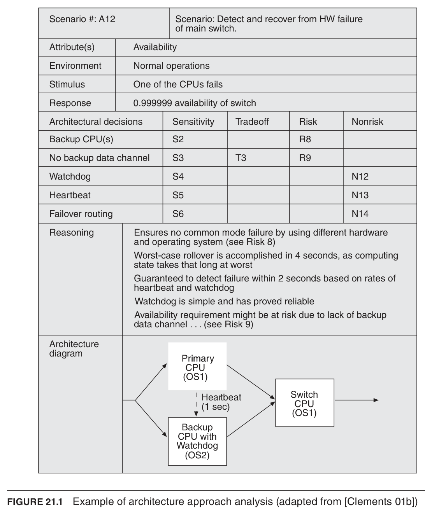
Brainstorming, summarization, and applying patterns are natural uses of GenAI that are also integral to many architecting activities. Brainstorming benefits from GenAI being trained on common descriptions of systems, technologies, and requirements, helping generate ideas and alternatives without missing options. Summarization works well because models account for surrounding context, useful for tasks like listing transaction types or classifying requirements into quality-attribute categories. Applying patterns converts unstructured inputs into well-formed outputs (e.g., ASRs as quality attribute scenarios or code generation), though for architecture the output quality depends on contextualization and a higher-quality training corpus.
브레인스토밍, 요약, 패턴 적용은 생성형 AI의 자연스러운 활용처이며 많은 아키텍팅 활동의 핵심 요소이기도 하다. 브레인스토밍은 GenAI가 시스템, 기술, 요구사항에 대한 일반적 설명으로 학습되어 아이디어와 대안을 빠짐없이 도출하는 데 도움을 준다. 요약은 모델이 주변 문맥을 고려하기 때문에 트랜잭션 유형 나열이나 요구사항을 품질 속성별로 분류하는 작업에 잘 맞는다. 패턴 적용은 비정형 입력을 잘 형성된 출력(예: 품질 속성 시나리오로 표현된 ASR, 코드 생성)으로 변환하지만, 아키텍처에서는 출력 품질이 맥락화와 고품질 학습 코퍼스 확보에 달려 있다.
Many architecting activities involve conceptual reasoning—applying abstractions in context, comparing options, and reasoning over collections of decisions—which depend on system context and analytical reasoning that are not natural fits for GenAI. Objective analysis applies analytic models (e.g., queueing theory) to produce categorically true/false results, but is neither pattern-matching nor probabilistic, making it a misfit. Subjective assessment represents SME opinions, which GenAI might accidentally match but not consistently; contextualization requires high-fidelity representation GenAI does not support; and fact checking has objectively correct answers that GenAI cannot reliably reproduce, since the need to fact check the fact check undermines its value. Early findings (Jahic and Sami) report ChatGPT 4 mixed high- and low-level concepts and missed hierarchies/dependencies, though architects valued its brainstorming help.
많은 아키텍팅 활동은 맥락 속에서 추상화를 적용하고, 대안을 비교·분석하며, 결정들의 집합에 대해 추론하는 등 개념적 추론을 포함하는데, 이는 시스템 맥락과 분석적 추론에 의존하여 GenAI에 자연스럽게 맞지 않는다. 객관적 분석은 분석 모델(예: 대기행렬 이론)을 적용해 참/거짓이 명확한 결과를 내지만, 패턴 매칭도 확률적이지도 않아 부적합하다. 주관적 평가는 전문가(SME)의 의견을 대변하는데 GenAI가 우연히 일치할 수는 있어도 일관성은 없으며, 맥락화는 GenAI가 지원하지 않는 고충실도 표현을 요구하고, 사실 확인은 객관적 정답이 있으나 GenAI가 안정적으로 재현하지 못해 그 가치가 약화된다. 초기 연구(Jahic과 Sami)는 ChatGPT 4가 고수준·저수준 개념을 부적절히 섞고 계층과 의존성을 놓쳤으나, 아키텍트들은 브레인스토밍 도움을 높이 평가했다고 보고한다.
This section describes five common architecture activities—defining ASRs, designing, evaluating, documenting, and reconstructing an architecture—and assesses their alignment with GenAI, identifying common sub-tasks and challenges for each rather than depicting a specific process. Table I lists the sub-tasks with a rough GenAI fit; the authors independently reviewed each based on Section II's competencies and limitations before consolidating, erring generously by assuming suitable inputs and experienced users. Across the activities, sub-tasks aligned with brainstorming/summarization (e.g., identifying stakeholders, enumerating decisions for evaluation, summarizing concepts from source code) are reasonable fits, while those requiring objective analysis, contextualization, high-fidelity representation, subjective assessment, or fact checking (e.g., generating well-formed ASRs, contextualizing design alternatives, mapping decisions to ASRs, generating actual views, assessing correctness of reconstructed views) are poor fits. The assessment approximates the current state rather than predicting the future.
이 절은 ASR 정의, 아키텍처 설계·평가·문서화·재구성이라는 다섯 가지 공통 아키텍처 활동을 설명하고 GenAI와의 정합성을 평가하며, 특정 프로세스를 묘사하기보다 각 활동의 공통 하위 작업과 과제를 식별한다. 표 I은 하위 작업과 대략적인 GenAI 적합도를 제시하며, 저자들은 II절의 역량과 한계를 토대로 각 항목을 독립적으로 검토한 뒤 통합했고, 적절한 입력과 숙련된 사용자를 가정하여 관대하게 평가했다. 활동 전반에서 브레인스토밍·요약에 부합하는 하위 작업(예: 이해관계자 식별, 평가용 결정 열거, 소스 코드 개념 요약)은 적합하지만, 객관적 분석·맥락화·고충실도 표현·주관적 평가·사실 확인이 필요한 작업(예: 잘 형성된 ASR 생성, 설계 대안의 맥락화, 결정을 ASR에 매핑, 실제 뷰 생성, 재구성된 뷰의 정확성 평가)은 부적합하다. 이 평가는 미래를 예측하기보다 현재 상태를 근사한 것이다.
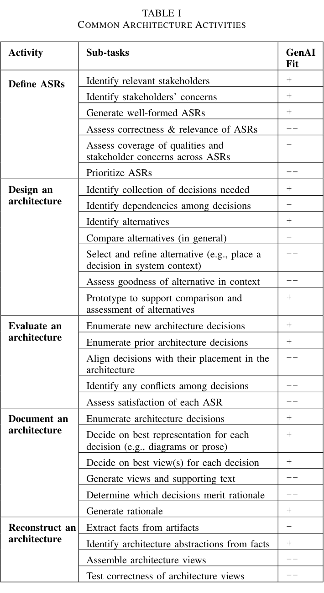